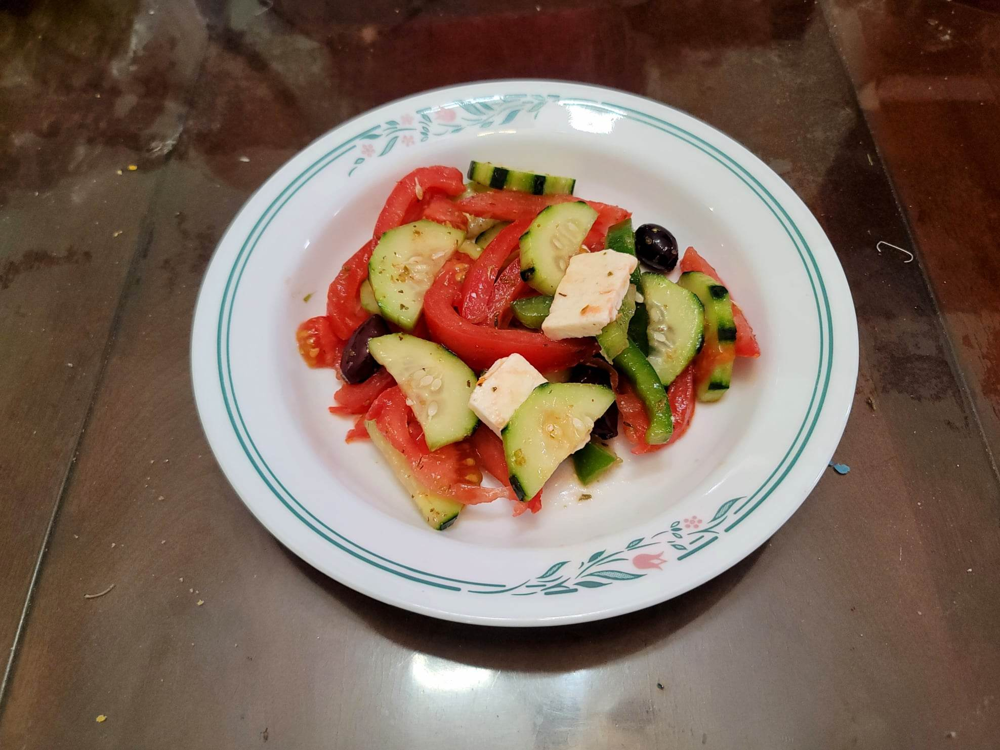

Horiatiki

Ingredients:
- 1 medium Red onion, thinly sliced
- 4 medium Tomatoes, cut into thin wedges
- 1 English cucumber, partially peeled, halved and sliced
- 1 small Green bell pepper, cored, sliced
- handful Kalamata olives, or to taste
- 1/8 tsp Kosher salt, or to taste
- 1/4 cup Olive oil
- 1-2 tbsp Red wine vinegar
- 6 oz Feta cheese, cut into slabs
- 1/2 tbsp Dried oregano
Instructions:
- Combine all the ingredients and toss lightly or until just combined. Serve immediately with crusty bread.